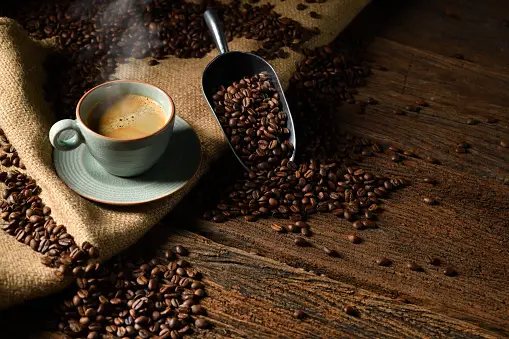
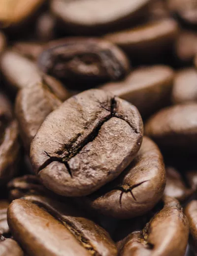
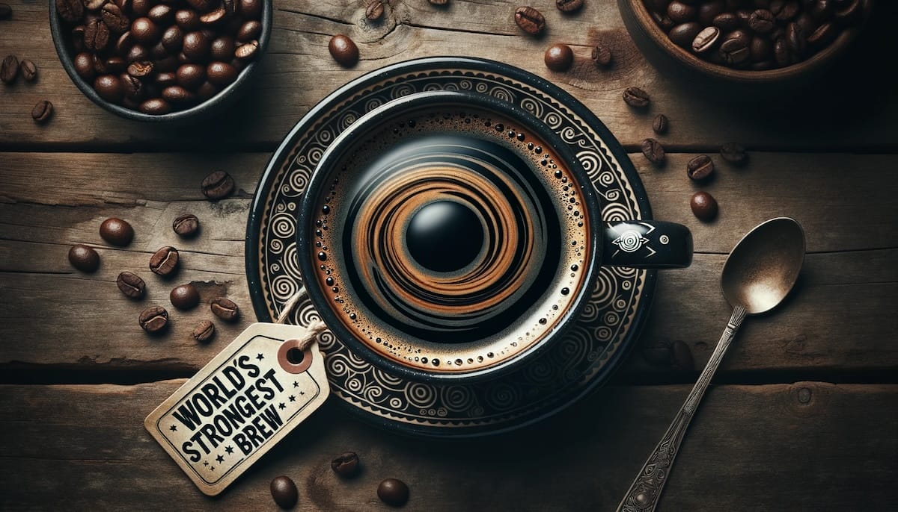
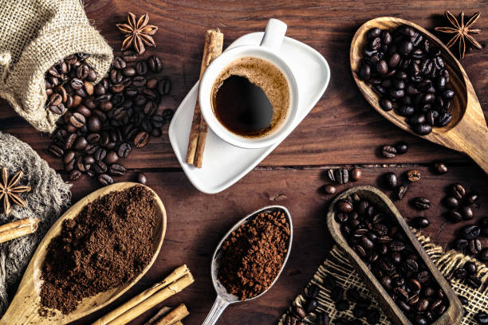

Kahve: Bir Damak Serüveni Kahve, dünya genelinde en çok tüketilen içeceklerden biri olarak öne çıkıyor. Özellikle sabah ritüelinin vazgeçilmez bir parçası olan kahve, sadece enerji verici bir içecek olmanın ötesinde, çeşitli tat profilleri ve kültürel derinlikleriyle de büyüleyici bir dünya sunuyor. Kahvenin Kökenleri: Kahvenin serüveni, Etiyopya'nın dağlık bölgelerine dayanıyor. Efsaneye göre, keçilerin kahve çekirdeklerini yediğini fark eden yerel keşişler, bu enerji dolu bitkiyi keşfettiler. Bu keşif, kahvenin yaygın olarak kullanılmasının başlangıcını oluşturdu. Çeşitli Kahve Çeşitleri: Kahve dünyası, farklı bölgelerde yetişen çeşitli kahve çekirdekleri sayesinde geniş bir yelpazeye sahiptir. Arabica ve Robusta çeşitleri en bilinenlerindendir. Arabica, hafif ve kompleks tat profili ile öne çıkarken, Robusta daha yoğun ve acı bir lezzete sahiptir. Her bir kahve çeşidi, coğrafi ve iklimsel farklılıklardan etkilenerek kendine özgü lezzet notalarını ortaya çıkarır. Kahvenin Demlenme Sanatı: Kahve demleme yöntemleri de kahve tutkunları için ayrı bir ilgi alanı oluşturur. Filtre kahve, French press, espresso ve siphon gibi çeşitli demleme teknikleri, kahve çekirdeklerinin benzersiz özelliklerini ortaya çıkarır. Her bir yöntem, kahve içicilerine farklı bir deneyim sunar. Kahve Kültürü: Farklı kültürlerde kahve, bir buluşma noktası, sosyal etkileşim aracı ve özel anların paylaşıldığı bir ritüel haline gelmiştir. İtalya'da bir kahve molası, Brezilya'da kahve tarlalarında çalışan işçiler arasında bir araştırma anı, Japonya'da Zen dünyasında bir meditasyon aracıdır. Sağlık ve Kahve: Kahvenin sağlık üzerindeki etkileri de araştırma konusudur. Uygun miktarda tüketildiğinde, antioksidanlar ve enerji verici özellikleri nedeniyle çeşitli sağlık yararları sunabilir. Ancak, aşırı tüketimin bazı olumsuz etkileri olabilir. Kısacası, kahve dünyası sadece bir içecekten ibaret değildir; aynı zamanda bir kültür, bir sanat ve bir yaşam tarzıdır. Her fincan, farklı bir hikayeyi ve lezzet macerasını temsil eder.